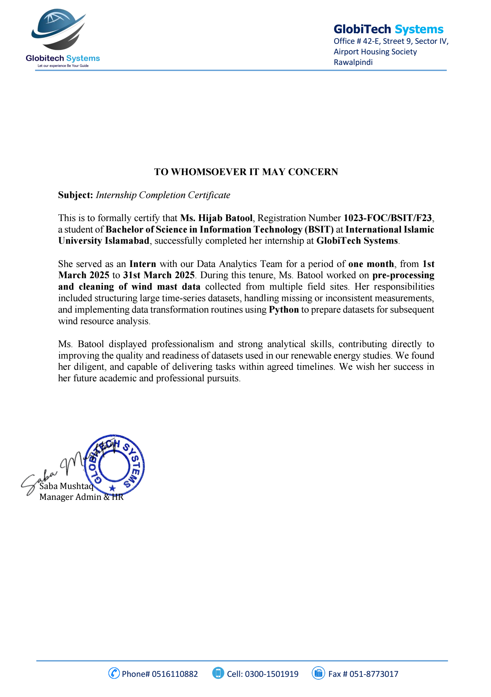

Experience & Training
Python & AI Course
3-month training in Python & AI, covering Python programming, data analysis, NumPy, Pandas, Matplotlib, and basic AI concepts.

Python Data Analyst Intern
1-month internship at Globitech System where I worked on real-world datasets, performing analysis, creating visualizations, and generating actionable insights using Python.
